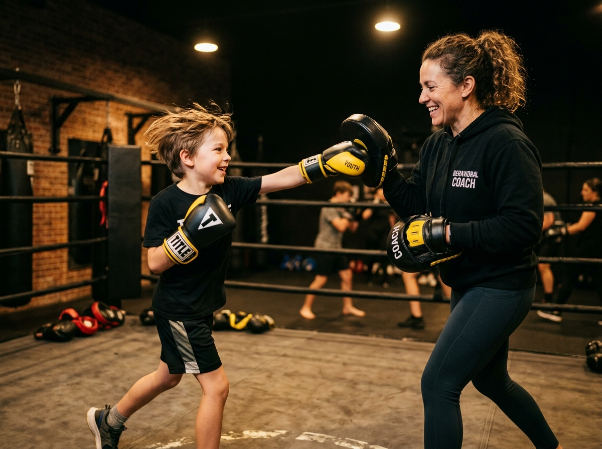

OUR SERVICES
Boxing Behavior Coaching is data-based, goal-driven, and individualized to each person. Delivered by Dr. Martinez, PhD, BCBA-D, USA Boxing Certified Bronze Level Coach.

BOXING BEHAVIOR COACHING FOR WOMEN
“I help women in their 30–50s meet health and fitness goals by developing boxing skills, endurance, and resilience through coaching and application of behavioral principles.”
Focused on mature working women and mothers ages 30y and up struggling to meet health goals, tired of impersonal gyms, and bored with standard fitness routines. Dr. Shannon Martinez, PhD, BCBA-D applies data-based behavior science and USA Boxing Bronze coaching to build lasting habits, strength, and real self-defense skills.
Individualized & Scientific: Several coaching packages available in Greenville, SC. Zero guesswork or pseudo-science.
THE FRAMEWORK: PROBLEMS WE SOLVE & SCIENTIFIC APPROACH
When you work with Dr. Martinez, you work together to identify barriers, build daily routines with accountability, and apply behavior science so you make measurable gains.
✕ Problems We Solve (Women 30s–50s)
- • Feel like they cannot maintain a work-life balance
- • Feeling physically and mentally sluggish and out of shape
- • Struggle to stick to a workout or wellness routine
- • Struggle to form and meet fitness and wellness goals
- • Bored with commercial gym workouts
- • Failed at other fitness regiments
- • Other fitness programs were boring
- • Other programs were not supportive or individualized
- • Other programs were one-dimensional and did not build skills like self-defense
✓ How I Approach The Problem
- • I help you identify barriers and develop real-life solutions
- • I create boxing-style fitness plans tailored to your needs
- • I create a skill-building program using goals and accountability to track progress
- • I create workouts that are fun and different
- • I create goals with systems of accountability to make sure you progress
- • I help you find personal values and strengths so you feel successful
- • As a certified coach, I teach technical boxing skills (offensive & defensive)
WHY MY APPROACH IS DIFFERENT & MORE BENEFICIAL
I am great at isolating barriers and suggesting small changes that make a big difference in your: life • skill development • fitness journey • weight loss progress • boxing performance.
If I was not offering my services, my niche group would... turn to commercial gyms, small gym classes, work with personal trainers who guess, or fumble through health routines recommended by magazines and online sources.
- • I apply a scientific process for solving their problems
- • My programs are individualized and utilize behavior change science
- • I do not rely on pseudo science, hearsay, or guessing
BOXING BEHAVIOR COACHING FOR CHILDREN
“I help girls and young women aged 5 thru 17 meet boxing and fitness performance goals by developing boxing skills, endurance, and empowerment through coaching and application of behavioral principles.”
Focused on children 5–17 years old targeting performance and fitness goals. Ideal for kids who love challenge and competition, as well as those needing direction, focus, cardio, agility, and positive social engagements.
Individualized Child Assessment: Uses behavior science and direct assessment to identify skills and deficits.

CONSULTATIVE SERVICES
For individuals, parents, coaches, and organizations looking for consultative services to discuss boxing and behavior change strategies, approaches, and troubleshooting.
Dr. Martinez consults on integrating empirical behavioral methodology into training routines, habit architecture, distress tolerance, and athletic development. Available in Greenville, SC and virtual video conference.

QUESTIONS & ANSWERS
Everything you need to know about Boxing Behavior Coaching, our scientific methodology, equipment, and training in Greenville, SC.
Boxing Behavior Coaching differs from classic training models because it is data-based, goal-driven, and individualized to each person. Rather than relying on guesswork, hearsay, or generic commercial gym routines, Dr. Martinez (a USA Boxing Certified Bronze Level Coach and doctoral Board Certified Behavior Analyst, BCBA-D) uses direct assessment and behavior change science to isolate personal barriers, establish habit reinforcement systems, and teach authentic technical boxing skills.
No prior boxing experience or fitness baseline is required! Programs are completely individualized. Whether you are a mature working woman struggling with physical sluggishness and work-life balance, or a child trying combat sports for the first time, workouts are calibrated to your current abilities with zero intimidation.
We specialize in two core demographics: (1) Mature working women and mothers ages 30s to 50s+ who want sustainable habits, self-defense, and fitness without boring commercial gym culture; and (2) Children and youth ages 5 to 17 looking to build coordination, cardio, focus, and athletic empowerment. We also provide professional consultative services for athletes, parents, and coaches.
Most people fail at fitness routines because the regimens are one-dimensional, boring, and ignore behavioral principles. Dr. Martinez identifies the environmental and mental barriers that cause you to stop working out, introduces small incremental adjustments, and builds tailored daily workout routines with positive accountability so consistency becomes effortless.
BOUYA Behavior Solutions is proudly located in Greenville, South Carolina. Private 1-on-1 sessions and small group appointments take place in our boutique, distraction-free training facility equipped with heavy bags, speed bags, mitt stations, and consultation space.
Just comfortable athletic workout apparel, athletic shoes, and water. We provide sanitized boxing gloves and focus mitts for initial intake sessions. Dr. Martinez will guide you on personal hand wraps and gloves as your training progresses.
We have several coaching packages available to fit your schedule and goals. The first step is filling out the Prospective Client Intake Form on our Contact page. Once submitted, Dr. Martinez personally reviews your information and reaches out to discuss the best coaching package and schedule your initial session!
Have a specific question not covered here?
ASK DR. MARTINEZ DIRECTLY